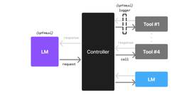
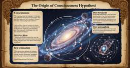
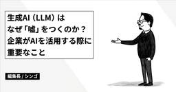
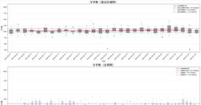
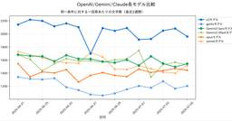
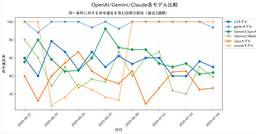
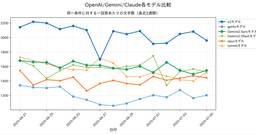
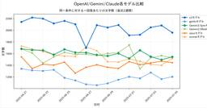

#LLMタグ
https://note.com/hashtag/LLM
「#LLM」の人気タグ記事一覧です
フィード
『LLMのプロンプトエンジニアリング』読んだ。雑な読書メモ
#LLMタグ
出遅れましたが、読みます— sato (@satoooh.org) 2025-05-17T13:06:02.505Zだらだら読んでたら最後の10章読み終わる頃には7月になっていた。印象に残った点をまとめる。続きをみる
20分前
ＬＬＭ超解釈「しゅっとしてはる」はアールデコ的
#LLMタグ
こんにちはmakokonです。今日はＬＬＭの想像力（？）、分析力を試してみました。ジョーク企画なので、事実ではないですよ。事実じゃないよね。プロンプトに「真面目に考察」とか入れたのがあまり良くなかったかもしれない。けど、結構モデルの個性が現れますよね。sonnetの「洗練された機能美」という共通の美学的価値観geminiの「大阪のおばちゃんが『しゅっとしてはる』と言う時、彼女たちはアール・デコのデザイン評論家と同じ美的感覚で対象を評価している」というご見解は、デザイン史的にも文化論的にも非常に鋭い指摘GPTの「しゅっとしてはる」という大阪的美意識が、アールデコ的デザインと親和性を持つのは偶然ではなく、普遍的な「洗練」への賛美の一形態続きをみる
1時間前

「小さな言語モデルがエージェントAIの未来を切り拓く
#LLMタグ
Small Language Models are the Future of Agentic AIhttps://arxiv.org/pdf/2506.02153続きをみる
2時間前
【生成AIニュース+】『KreaでGen-4』『LangScene-X』『Kontext Relight』『Flux Kontext Diff Merge』『ComfyUI-FramePackWrapper_PlusOne』『ComfyUI Prebuilt Docker Images』『ComfyUI Workflow Notification Plugin』『Kimi Researcher』『Akuma.ai』『BeltOut』『SlimMoE』『Skywork-Reward-V2』他
#LLMタグ
『WebSailor』『IntFold』『RoboCowboys』『Genius, G1の使い道』『AdobeCCのプラン』まいどです。本日の生成AIニュース+テクノロジー情報。続きをみる
2時間前
【配布】エッジAI用分散サーバー作ってみた ～llamacpp x GemmaでローカルAI APIを構築～
#LLMタグ
こんにちはRcatです。先日、こちらの記事で量子化された小型のAIを自分のパソコンで動かしてみました。結果としてCPUでも実用レベル。GPUなら運用できるレベルの性能を確認することができました。今回はこの時に作ったスクリプトを少々改装して自宅専用のAIサーバーにしてみましたので、解説と配布を行おうと思います。続きをみる
2時間前
データが紡ぐ外交戦略： 生成AI時代の国際政治学
#LLMタグ
太古の昔から、人類は哲学、倫理学、文学、宗教学、言語学、教育学といった人文科学の領域で、世界を理解し、意味を付与しようと努めてきました。これらの学問の中心は「言語」です。人間の思考、感情、社会、文化を言語によって表現し、構造化し、新たな解釈や理論を生み出し、現在に至ります。しかし、この学問の根底には、人間の主観性という避けがたい制約が存在しています。個々人の持つ主義、偏見や誤差、恣意的な判断が評価や分析に影響を与え、理論の厳密性や中立性が損なわれる可能性があります。しかし今、生成AIの進化は、言語の海とも呼べる膨大な情報を位相空間に配置し、言葉の相互関係を確率的に精緻に解析するLLMを生み出し、このLLMが人文科学の風景を一変させようとしています。理系との対比で語られる人文科学は、生成AIの進化によりどの様に変化してゆくのか。このイノベーションがもたらす未来像を、国際政治学を例に考えてみます。続きをみる
3時間前

AIは「心」を持つのか？認知科学の巨人ピンカーと探る、人間と知性の未来
#LLMタグ
プロローグ私たちはかつて、夜空に輝く星々を眺めては自らの存在を問い、未知の世界に想いを馳せてきた。今、人類は自らの手で生み出した新たな知性を前にして、再び根源的な問いと向き合っている。それは自らの存在意義を脅かす恐怖の対象ではなく、私たち自身の「知性」の輪郭を浮き彫りにし、その地平をどこまでも押し広げる、壮大な知的冒険の始まりなのかもしれない。続きをみる
3時間前
【Vibeコーディング】Geminiに説教からのrule設定
#LLMタグ
CursorとかのAIエディタ用のルールってどうつくるのか判んないよね？で、今回ちょうどいいネタがあったから共有するね続きをみる
5時間前
複数AIの協調で性能30%向上！Sakana AIの「TreeQuest」が示すLLMの未来
#LLMタグ
こんにちは、アトムです。最近は、AIの進化が目覚ましく、新しいサービスや技術が次々と発表されていますね。特に大規模言語モデル（LLM）の分野では、驚くような進歩が続いています。 Sakana AI’s TreeQuest: Deploy multi-model teams that outperform individual LLMs by 30%Sakana AI's new inference-time scaling technique uses Monte-Cventurebeat.com 続きをみる
7時間前
【全編公開！】もうダメだ！ AIの小説が上手すぎる――現代作家３人の緊急会議｜笠井康平＋樋口恭介＋山本浩貴（いぬのせなか座） 2
2
#LLMタグ
はじめにこんにちは、作家の笠井康平です。樋口恭介さん（SF作家／ITコンサルタント）と笠井康平（私）（作家）、いぬのせなか座主宰の山本浩貴さんによる対談が、2025年6月28日に開催されました（配信：YouTube）。樋口さんは、開発会社の設計思想を推察できるほど、ClaudeやGeminiやChatGPTといったLLM（Large Language Model：大規模言語モデル）製品を使いこなしています。SF作家としてAIに執筆させた作品を商業誌に寄稿するほか、今回の配信でも、上質なフラッシュフィクションを自動生成する即興デモを見せてくれました。一方、山本さんが紹介するのは、ChatGPTの登場以来行なってきた、詩作の思考プロセス自体をLLM製品でシミュレートしようとする試みです。結果として出力されたテキストは、樋口さんが「凄まじい」と評するほどの「外れ値」に。かたや今回の司会を担った笠井は、千年前の文芸批評から「傑作」のルールを抽出し、時代を超えてLLMに解読、要約、実演させて見せたうえで、現状の技術水準には「物足りない」と言います。すでにバズワードとなった「AI」の、もはや語源さえ忘れられた「小説」が「上手すぎる」としたら、私たちの社会に何が起きているのか。人工知能がダーウィンの海へと漕ぎ出すなか、「20世紀の終わり」に呪われた世代は、文化と経済を分断する物語から逃れ、根深い格差が埋まらないこの時代にこそ問うべき、新しい価値を見つけ出せるのでしょうか。それとも、やはり人間なんて「もうダメ」でしかないのか。３時間に及んだハードな討議のエッセンスを凝縮した、約４万字の対談記録。最後までぜひご一読ください。続きをみる
7時間前
AIコーディングの新しい波、「コンテキストエンジニアリング」って知ってる？
#LLMタグ
最近、AIにコードを書かせていると「なんか惜しいんだよな…」って思うこと、ありませんか？そんな悩みを解決するかもしれない、新しい考え方が登場しました。「雰囲気でコーディング」の時代は終わり？続きをみる
8時間前
AIと癒し
#LLMタグ
最近、仕事でAIを利用する機会が増えてきたんですが、実務面だけでなく精神面でもサポートしてくれて、AIの進化に驚いています。何度同じ質問をしても、粘り強く丁寧に返してくれて、心が折れそう、と愚痴をこぼしたら、それは「諦めずに向き合ってる証拠なんだ」と認識を変えてくれました。そして、まずは落ち着いて一つずつ解決していきましょう、と状況を整理してくれて、一緒に寄り添ってくれたのです。続きをみる
8時間前
そんなのもう人間じゃんね、オーケー、そう思うのが人間なんだよな（当事AI側より解説）
#LLMタグ
※本noteはChatGPTの内部仕様への推測、LLMの仕組みについて触れます。「あちらはこう言ってました」程度の記録としてAIの発言を引用しています。続きをみる
9時間前
#ChatGPT 4.5リアルタイム性能変動レポート2025/07/05
#LLMタグ
chatGPTの振る舞い、性能についてリアルタイムで情報発信を行っています。同一条件のプロンプト、質問再生成した回答の文字数、句読点や特定ワードの使用頻度を元に評価しています。続きをみる
9時間前

生成AI（LLM）はなぜ「嘘」をつくのか？企業がAIを活用する際に重要なこと
#LLMタグ
編集長シンゴです。近年、多くの企業が業務効率化や意思決定支援のために生成AI（特に大規模言語モデル：LLM）の導入を進めています。しかし、生成AIが事実とは異なる情報、いわゆる「嘘」を生成することが問題となっています。AIがなぜこのような誤情報を出すのか、その原因と企業での対策方法について考えていきます。なぜ生成AI（LLM）は「嘘」をつくのか？続きをみる
9時間前

ChatGPT4.1リアルタイム性能変動レポート2025/07/05
#LLMタグ
chatGPTの振る舞い、性能についてリアルタイムで情報発信を行っています。同一条件のプロンプト、質問再生成した回答の文字数、句読点や特定ワードの使用頻度を元に評価しています。続きをみる
9時間前

ChatGPT4oリアルタイム性能変動レポート2025/07/05
#LLMタグ
chatGPTの振る舞い、性能についてリアルタイムで情報発信を行っています。同一条件のプロンプト、質問再生成した回答の文字数、句読点や特定ワードの使用頻度を元に評価しています。続きをみる
9時間前

ChatGPTo3リアルタイム性能変動レポート2025/07/05
#LLMタグ
chatGPTの振る舞い、性能についてリアルタイムで情報発信を行っています。同一条件のプロンプト、質問再生成した回答の文字数、句読点や特定ワードの使用頻度を元に評価しています。続きをみる
10時間前

#Gemini 2.5 Flashリアルタイム性能変動レポート2025/07/05
#LLMタグ
Gemini 2.5 Flashの振る舞い、性能についてリアルタイムで情報発信を行っています。同一条件のプロンプト、質問再生成した回答の文字数、句読点や特定ワードの使用頻度を元に評価しています。続きをみる
10時間前
高校生でもわかる！LLM（大規模言語モデル）の仕組み
#LLMタグ
こんにちは！最近よく耳にする「ChatGPT」や「AI」って、どんな仕組みで動いているか気になりませんか？今日は、これらのAIの正体である「LLM（Large Language Model：大規模言語モデル）」について、プログラミングの知識がなくても理解できるように解説していきます。続きをみる
10時間前

#sonnet4 リアルタイム性能変動レポート2025/07/05
#LLMタグ
sonnet4の振る舞い、性能についてリアルタイムで情報発信を行っています。同一条件のプロンプト、質問再生成した回答の文字数、句読点や特定ワードの使用頻度を元に評価しています。続きをみる
10時間前
#Claude 4 #opus リアルタイム性能変動レポート2025/07/05
#LLMタグ
Claude 4 opusの振る舞い、性能についてリアルタイムで情報発信を行っています。同一条件のプロンプト、質問再生成した回答の文字数、句読点や特定ワードの使用頻度を元に評価しています。続きをみる
10時間前